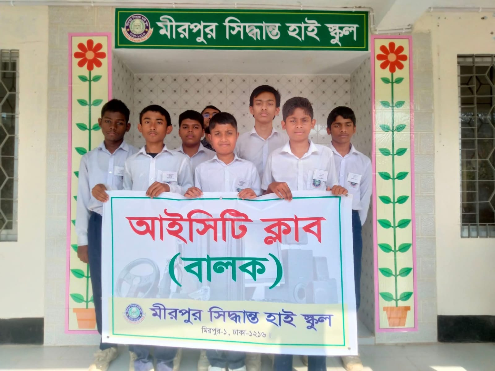
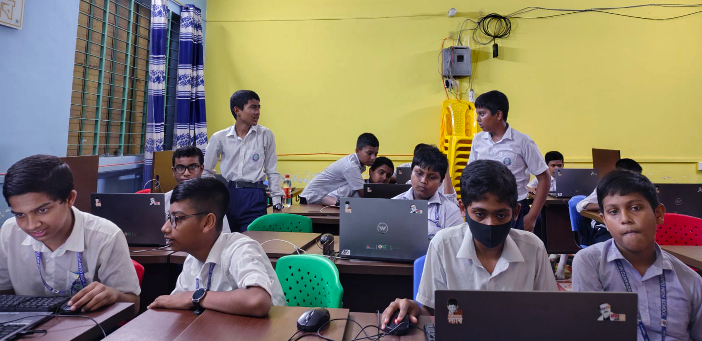
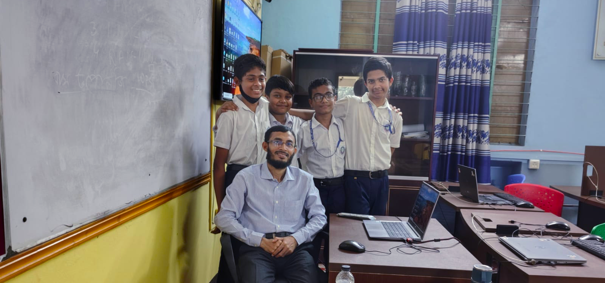
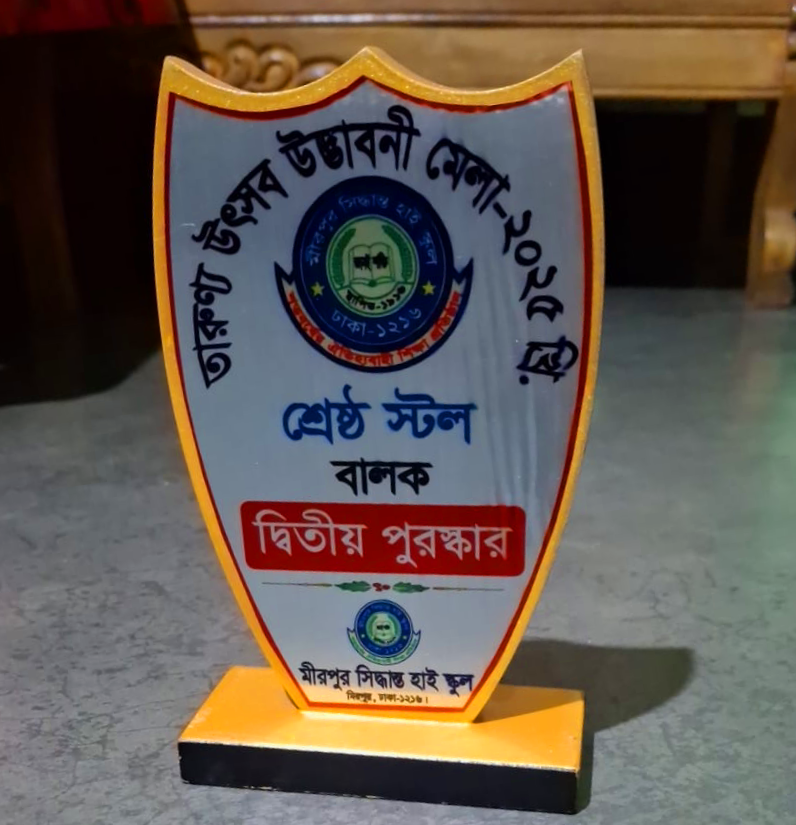
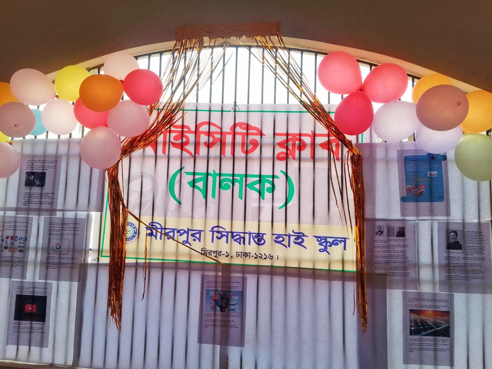
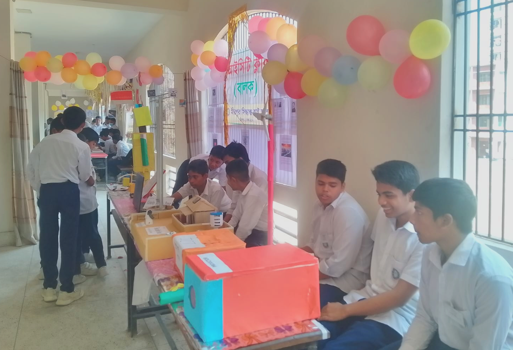
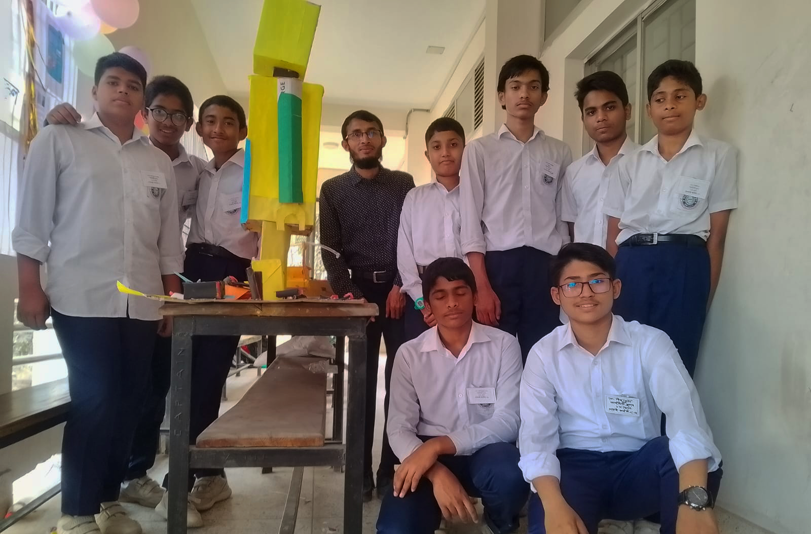

2021-2023
The government of Bangladesh improves the ICT lab with Wi-Fi, a TV and more

Welcome
This is the official website of the ICT Club at Mirpur Siddhanta High School. Created by and made for the students of the ICT Club. Here, you can see details of the ICT Lab, the name of every Committee Member and General Member, the Teachers and more.... Read more
Cover: Anna Hinckel
At Mirpur Siddhanta High School, each club has 3 teachers who lead and
guide their respective clubs. Right ahead of the committee members, the
teachers hold the most power in a club. The ICT club is no exception to
this. We also have 3 teachers who hold meetings, make sure the club is
functioning and working properly, assign roles in the committee, teach
us about ICT, and most importantly they guide us about ICT and help us
understand the core fundementals of being in the ICT club. The teachers
of the ICT club are an important part of the club.
A teacher of the ICT club can add or remove members, assign, promote,
demote or remove committee members, hold meetings, change shedules for
events or lab classes, lead lab classes and more.
.png)
Sakhawat Hossain is the main convener of the ICT Club, He was born 1996. He studied at Jagannath University and was a former Journalist at the International Desk of Amader Shomoy. He has a background in Journalism and ICT with a degree in Computer Science from the Dhaka Polytechnic Institute. Because of this he is the ICT teacher of the ICT club at Mirpur Siddhanta High School.

Shariful Islam is an assistant teacher at Mirpur Siddhanta High School and member of the ICT Club. He is the 2nd in-charge teacher of the ICT club right behind Sakhawat Hossain.
Rezowan Islam is the newest teacher of the ICT club at Mirpur Siddhanta High School. He was born on the 7th of May, 1999. In 2017, he attended Jagannath university. There, he learned a lot about ICT from making slides, notes and presentations for his assignments. The experience and practical knowledge gained about ICT from university made him an ideal teacher for the ICT Club. Despite being a teacher of Biology, he enjoys being a teacher of the ICT club and using his knowledge to improve the club.
“ICT basically means the free supply and storing of information. In this era of science, it is almost impossible to live without ICT. since the 4th Industrial Revolution, ICT has gotten more and more important day by day. If we want to keep up with the times or adapt to a new and better civilization, we have no more alternatives. We can get access to all the information in the world just from our homes, from the assignments given at a school or college to the knowledge gained from practicals, all of this is accessible just from our homes. For this reason, the introduction of ICT begins from the primary level, so that each and every student can make themselves Intelligent and skilled. Everything from Mobile phones to Computers is depended on ICT. In conclusion, to develop ourselves into skilled and great citizens, to serve the motherland and to reach the peak of civilization, the victory of ICT to should at the doorstep of every home.”Rezowan Islam
At Mirpur Siddhanta High School,
each club has 7 executive committee members.
Who are special members.
while they have less power than teachers, they still play an important part in their club.
Each committee member has their own level of power.
as shown in the chart below,
The Chairman is the highest ranking student of the ICT club.
They have the most power in decisions and meetings.
while a normal committee member is the lowest ranking member.
It is recommended that for any problems or question a student might have,
it is better to go to a committee members first, since teachers are usually busy.
And if a problem is too severe, then the committee member can easily tell the teachers.
A committee member can add members, moderate the Whatsapp group, ask for meetings, make announcements on important events and much more.
.png)
The Computer Lab at Mirpur Siddhanta High School is a lab ideal for teaching Word Processing,
Coding and all other things ICT has to offer.
The lab has a giant TV screen connected to a laptop so students can easily see what the teacher is doing.
It has 13 laptops with internet connection with each laptop having a way to write in both Bangla and English.
The ICT Lab at Mirpur Siddhanta High School is located on the 2nd floor of the Administrative Building.
It was created in the mid 2010s but back then the lab lacked recources and technology.
In between 2020-2023, during a national government project to develop the nation,
The lab was improved with Wi-Fi and more.
One of the perks of being in the ICT club is that each week on wednesday at 11:00 AM,
the ICT club hosts 1 hour long classes at the ICT lab taught by the covener of the ICT club, Sakhawat Hossain.
unless if there is a holiday on wednesday or it is announced that classes will not happen, lab classes will go on.
Everyone who is a member of the ICT club can attend these classes.
Although classes are optional and there is no punishment or fine for not attending them, there is a lot to learn from lab classes.
Topics like how to use microsoft word or excel and other things about ICT will be taught in a practical and easy manner.
Days
Hours
Minutes
Seconds

2025, the executive committee as it was, 1 year ago

2025, a session in the ICT lab

2025, students after lab class

2025, the 2nd place prize

2025, students decoration for the Youth Fair

2025, mens ICT club stall at the Youth Fair

2025, students with a project at the Youth Fair
The government of Bangladesh improves the ICT lab with Wi-Fi, a TV and more
After Mostafizur Rahman becomes the headmaster, he makes plans to create clubs. As a way to improve the school with extracurriculars
12 clubs are created at the Mirpur Siddhanta High school including the Mens ICT Club.
The first executive committee is created. Every club had 7 members in their committee, each member having various roles. there was 1 chairman, 1 vice-chairman, 1 treasurer and 4 normal committee members
The first hour long lab class is held. Back then ICT lab classes were held on Thursdays and not Wednesdays.
The Mens ICT club secures 2nd place at the 2025 Youth Fair. The Youth Fair was a competition between all clubs to see which club could create the best projects.

Rezowan Islam joins the ICT club as its newest member.
The 2026 executive committee is created with many changes. 2026 saw the addition of the Editor role. Which replaced a normal committee member role. Meaning there were now only 3 normal committee members
This website is finished and released after almost 4 months of web development.